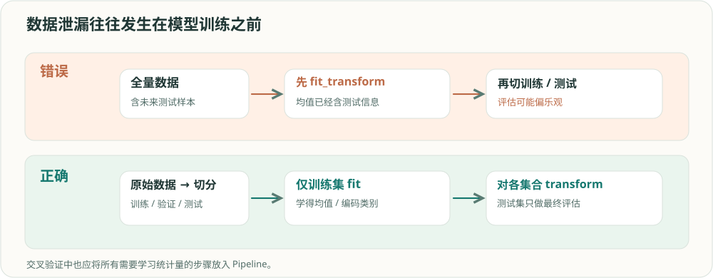
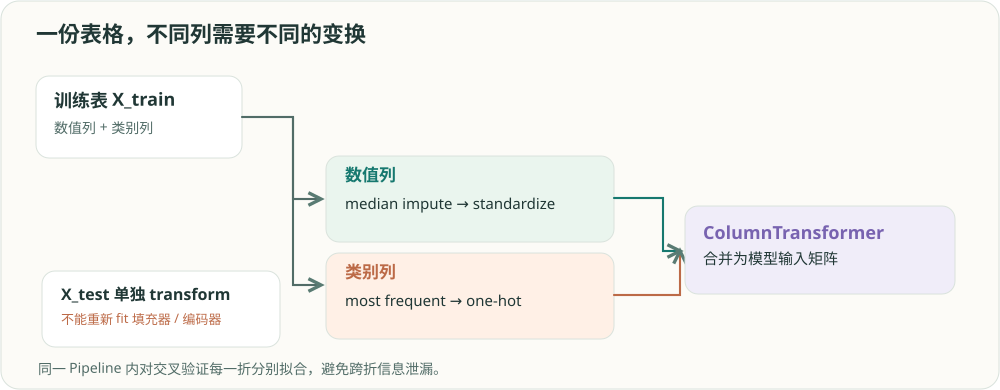

数据预处理：阻止信息泄漏的第一道防线
缺失值、异常值、类别编码和标准化都不是与评估无关的准备工作。预处理通常要从训练数据学习统计量，因此顺序决定测试结果是否可信。
01 · 先定义数据边界
预处理的目标是将原始数据变成模型能可靠消费的表示，并保留必要的统计边界。开始前要理解每一行是什么、每一列是什么、记录何时采集、预测时哪些字段可用、目标标签何时产生。数据表中看似合理的字段，可能包含只有结果发生后才知道的信息。
在探索性数据分析（EDA）中，应先查看列类型、缺失比例、分布、重复样本、类别基数、目标比例与时间跨度。如果需要报告整体数据健康程度，可以描述总体统计；但用于选择变换或模型的统计量必须在严格训练边界内学习。对分组或时间序列数据还需设计适当切分。
02 · 预处理先于切分会发生什么
假设使用全表均值标准化，然后再分出测试集，训练样本的变换已使用测试样本的信息。即使你没有把测试标签传给模型，评估仍可能发生偏差。更常见的错误还包括全数据选择特征、全数据填补缺失值和在交叉验证外计算编码字典。

scikit-learn 的 Pipeline 把“转换器学习参数”与“模型训练”统一放入交叉验证的训练折，防止在每折以外偷看验证数据。对于测试集，严格只调用 predict 或 transform，而不在任何步骤重新 fit。
03 · 缺失值不只是填零
缺失数据可能是完全随机缺失（MCAR）、条件随机缺失（MAR），也可能与未观测值本身有关（MNAR）。这些机制不能只凭一个缺失率直接判定。数值列可以用训练集中的中位数或其他合理估计填充；类别列常使用众数或独立的“未知”类别。是否添加缺失指示列取决于预测任务与训练集缺失模式。
填充无法神奇恢复丢失的信息，且可能缩小方差或引入偏差。对时间序列要避免用未来观测做前向时间点的填充；对存在结构性缺失的字段，应考虑缺失本身是否具有业务含义。
04 · 异常值与可疑模式
箱线图规则经常以 Q1−1.5·IQR 与 Q3+1.5·IQR 标记异常，其中 IQR=Q3−Q1。它是检测启发式，而不是证明数据错误的判据。极值可能是真正重要的罕见事件，直接删除会使模型失去识别能力；应先追溯来源，再考虑截尾、稳健缩放或适合长尾分布的特征变换。
对分类特征，独热编码适用于许多低基数类别；未知类别在验证或生产时应有明确处理。高基数类别的目标编码如果未经交叉拟合，尤其容易通过标签泄漏引发虚假高分。
05 · 不同类型列走不同管线
数值列通常需要缺失填充和必要时的缩放，类别列通常需要类别填充与编码。ColumnTransformer 允许为不同列定义子管线，然后拼接特征给模型；Pipeline 让这一整套变换与估计器一起接受 fit/predict 和交叉验证。

这里分母为训练集中拟合得到的标准差；若某列方差为零，不能机械执行上式的除法，须由实现做零方差保护或去掉该列。对决策树类算法标准化往往不是必需步骤，对距离敏感模型却经常影响很大。
06 · 可复现的混合类型 Pipeline
下面构造一个小型二分类玩具表，数值和类别分别预处理，再进行分层切分与模型拟合。输出不代表真实性能；这个例子的重点是确保所有预处理步骤位于同一管线中。
import numpy as np
import pandas as pd
from sklearn.model_selection import train_test_split
from sklearn.compose import ColumnTransformer
from sklearn.pipeline import Pipeline
from sklearn.impute import SimpleImputer
from sklearn.preprocessing import OneHotEncoder, StandardScaler
from sklearn.linear_model import LogisticRegression
X = pd.DataFrame({
'age': [23,35,42,np.nan,29,51,47,31,38,26,44,34],
'city': ['A','B','A','C','B','A',None,'C','B','A','C','B']
})
y = np.array([0,1,1,0,0,1,1,0,1,0,1,0])
Xtr, Xte, ytr, yte = train_test_split(
X, y, test_size=0.25, stratify=y, random_state=7
)
num = Pipeline([('fill', SimpleImputer(strategy='median')),
('scale', StandardScaler())])
cat = Pipeline([('fill', SimpleImputer(strategy='most_frequent')),
('onehot', OneHotEncoder(handle_unknown='ignore'))])
prep = ColumnTransformer([('num', num, ['age']),
('cat', cat, ['city'])])
model = Pipeline([('prep', prep), ('clf', LogisticRegression(max_iter=1000))])
model.fit(Xtr, ytr)
pred = model.predict(Xte)
assert len(pred) == len(yte)
print('test predictions:', pred.tolist())依赖 Python 3.10+、NumPy、pandas、scikit-learn。中位数、均值方差和类别词表均由训练集学习；handle_unknown='ignore' 规定了未见类别的处理行为。真实项目还应使用恰当的业务切分、交叉验证和输入模式检查。
07 · 数据质量核查清单
完成预处理前逐一检查：训练与测试是否有重复实体？时间顺序是否被打乱？标签是否来自预测未来？是否对测试集调过阈值？是否提前查看了全表的目标相关性？当数据分布改变时，管线中的填充规则、类别集合与标准化统计是否仍适用？
一个适当复杂度的模型加上严格的数据边界，通常比“先把所有样本加工好，再随机分割”的精致代码更值得信任。